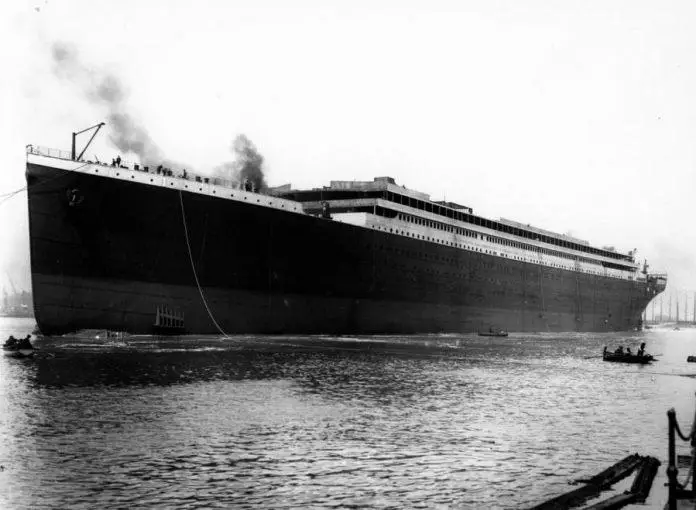
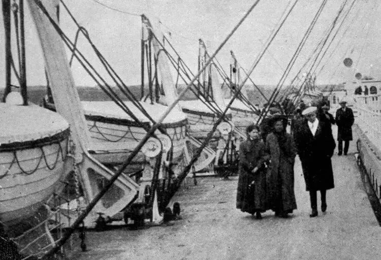
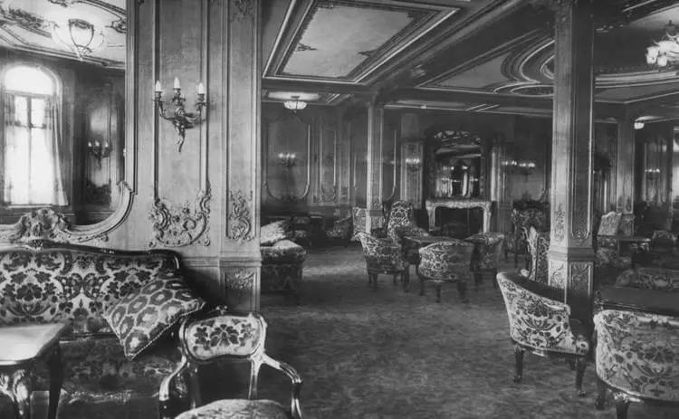
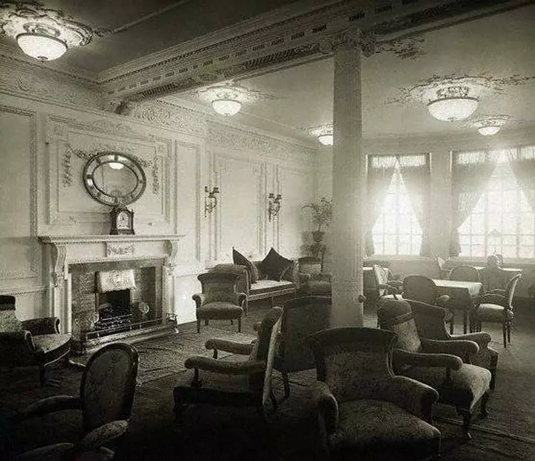
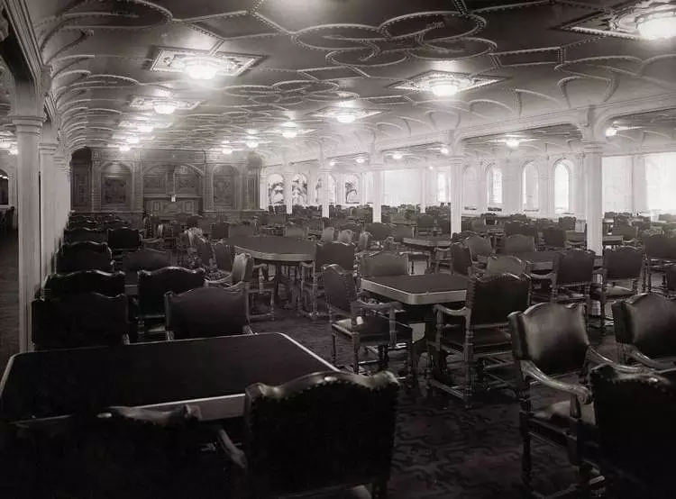
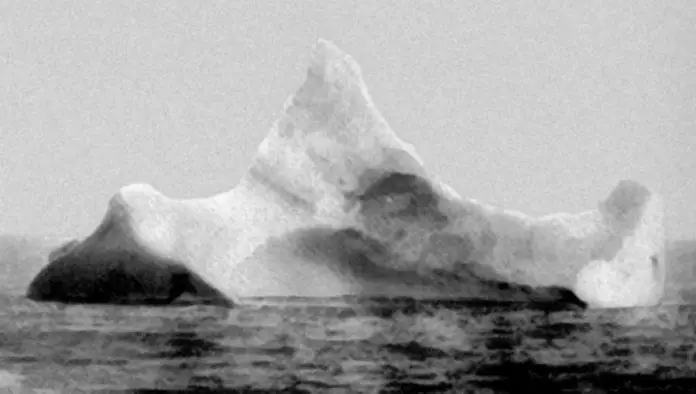
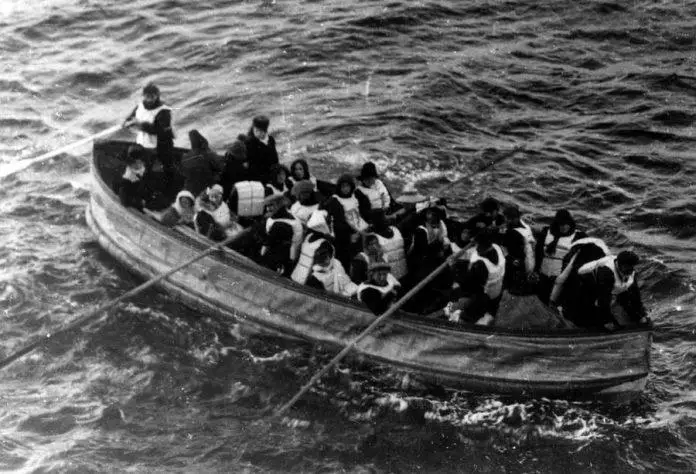
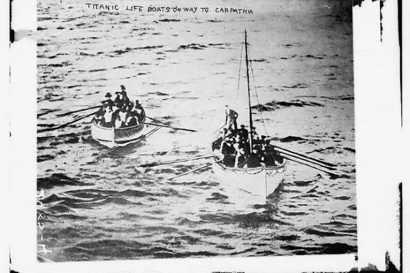

Крупнейшее пассажирское судно в мировой истории в 1912—1913 годах. Во время первого рейса затонул в северной Атлантике, столкнувшись с айсбергом в ночь с 14 на 15 апреля 1912 года.
Незаконченный «Титаник» в Белфасте, 31 мая 1911
Титаник строился в Белфасте на верфи «Harland & Wolff» с 1909 по 1912 год. «Титаник» был оборудован двумя четырёхцилиндровыми паровыми машинами и паровой турбиной. Вся силовая установка обладала мощностью 55 000 л. с. Лайнер мог развивать скорость до 23 узлов (42 км/ч). Его водоизмещение, превышавшее пароход-близнец «Олимпик» на 243 т, составляло 52 310 т. Корпус судна был изготовлен из стали. Трюм и нижние палубы разделялись на 16 отсеков переборками с герметичными дверями. При повреждении днища попаданию воды в отсеки препятствовало двойное дно.
Титаник и Олимпик
Журнал «Shipbuilder» назвал «Титаник» практически непотопляемым, это высказывание получило широкое распространение в прессе и среди общественности. В соответствии с устаревшими правилами «Титаник» был оснащён 20 спасательными шлюпками, суммарной вместимостью 1178 человек, что составляло лишь треть от максимальной загрузки парохода.
Пассажиры прогуливаются по палубе мимо спасательных шлюпок незадолго до столкновения с айсбергом
Каюты и общественные помещения «Титаника» разделялись на три класса. К услугам пассажиров первого класса были представлены плавательный бассейн, корт для игры в сквош, ресторан «À La Carte», два кафе, гимнастический зал. Во всех классах имелись обеденные и курительные салоны, открытые и закрытые променады. Наиболее роскошными и изысканными были интерьеры первого класса, выполненные в различных художественных стилях с использованием дорогих материалов, таких как красное дерево, позолота, витражное стекло, шёлк и прочие. Каюты и салоны третьего класса оформлялись максимально просто: стальные стены окрашивались в белый цвет либо обшивались деревянными панелями
Гостиная первого класса
Комната отдыха первого класса
Столовая на «Титанике
10 апреля 1912 года «Титаник» отправился из Саутгемптона в Нью-Йорк, в свой первый и единственный рейс. Лайнер вышел в Атлантический океан с 1317 пассажирами и 908 членами экипажа на борту. Планировалось прибыть в Нью-Йорк 17 апреля. Командовал судном капитан Эдвард Смит. 14 апреля радиостанция «Титаника» приняла семь ледовых предупреждений, однако лайнер продолжал двигаться почти на предельной скорости. Чтобы избежать встречи с плавучими льдами, капитан приказал идти чуть южнее привычного маршрута
Айсберг, подозреваемый в крушении «Титаника». Его сфотографировал стюард судна «Принц Адальберт» в то самое утро катастрофы буквально в нескольких милях к югу от места, где «Титаник» ушел на дно
14 апреля в 23:39 вперёдсмотрящий Фредерик Флит доложил на капитанский мостик об айсберге прямо по курсу. Меньше чем через минуту произошло столкновение. Получив несколько пробоин, пароход начал тонуть. В шлюпки сажали в первую очередь женщин и детей. В 2:20 15 апреля, разломившись на две части, «Титаник» затонул, унеся жизни 1496 человек. 712 спасшихся человек подобрал пароход «Карпатия»
Последняя шлюпка с «Титаника
Шлюпки с «Титаника» направляются к Карпатии